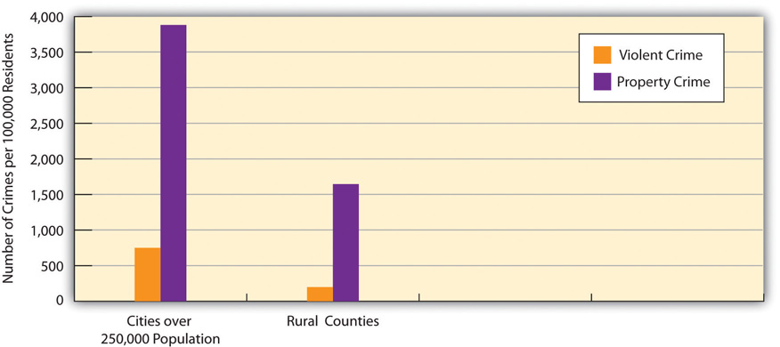

Life in US cities today is certainly complex. On the one hand, many US cities are vibrant places, filled with museums and other cultural attractions, nightclubs, theaters, and restaurants and populated by people from many walks of life and from varied racial and ethnic and national backgrounds. Many college graduates flock to cities, not only for their employment opportunities but also for their many activities and the sheer excitement of living in a metropolis.
On the other hand, many US cities are also filled with abject poverty, filthy and dilapidated housing, high crime rates, traffic gridlock, and dirty air. Many Americans would live nowhere but a city, and many would live anywhere but a city. Cities arouse strong opinions, pro and con, because there are many things both to like and to dislike about cities.
By definition, cities consist of very large numbers of people living in a relatively small amount of space. Some of these people have a good deal of money, but many people, and in some cities most people, have very little money. Cities must provide many kinds of services for all their residents, and certain additional services for their poorer residents. These basic facts of city life make for common sets of problems affecting cities throughout the nation, albeit to varying degrees, with some cities less able than others to address these problems. This section examines several of these problems.
One evident problem is fiscal: Cities typically have serious difficulties in paying for basic services such as policing, public education, trash removal, street maintenance, and snow removal (at least in cold climates), and in providing certain services for their residents who are poor or disabled or who have other conditions. The fiscal difficulties that cities routinely face became even more serious with the onset of the nation’s deep recession in late 2007, as the term fiscal crisis was used again and again to describe the harsh financial realities that cities continued to face even after the recession officially ended in mid-2009 (McNichol, 2009).McNichol, D. A. (2009, May 1). Revenue loss putting cities in fiscal vise. New York Times, p. NJ1.
In early 2012, almost three years after the United States officially emerged from the recession, this fiscal crisis persisted. The mayor of Syracuse, New York, announced that her city faced a budget deficit of $16 million and called its fiscal problems “staggering” (Knauss, 2012).Knauss, T. (2012, January 26). Former Lt. Gov. Richard Ravitch to advise Syracuse on finances, Mayor Stephanie Miner says. The Post-Standard. Retrieved from http://www.syracuse.com/news/index.ssf/2012/01/former_lt_gov_richard_ravitch.html. Mayors in Rhode Island told their governor that their cities need fiscal aid from the state to prevent them from having to declare bankruptcy. One of the mayors said, “We all have the same issues. Something has to be done this year. We cannot have a study commission. We cannot say ‘we’ll wait until 2013 or 2014.’ This is do or die” (Klepper, 2012).Klepper, D. (2012, January 5). RI Gov., mayors say state must help cities now. The Boston Globe. Retrieved from http://www.boston.com/news/local/rhode_island/articles/2012/01/05/ri_gov_mayors_say_state_must_help_cities_now. Detroit, Michigan, was in danger of running out of money altogether and being taken over by its state government. The member of the US House of Representatives who represents Detroit said he was seeking aid from the federal government: “Bottom line, I’m asking for federal aid to avoid massive layoffs, especially for our public safety workers. That’s what we actually need to attract businesses here who create jobs. We need safe streets and we need good schools” (Oosting, 2012).Oosting, J. (2012, January 30). Rep. Hansen Clarke talks with president on Air Force One, seeks emergency aid for Detroit. Mlive.com. Retrieved from http://www.mlive.com/news/detroit/index.ssf/2012/01/rep_hansen_clarke_talks_with_p.html.
In response to financial problems in these and other cities across the nation, the US Conference of Mayors urged Congress in early 2012 to provide several kinds of aid to cities, including low-interest loans for local rail and road projects and funding for housing and job training for low-income residents (United States Conference of Mayors, 2012).US Conference of Mayors. (2012, January 24). Statement by US Conference of Mayors president Los Angeles Mayor Antonio Villaraigosa in reaction to President Obama’s State of the Union address. Retrived from http://www.usmayors.org/pressreleases/uploads/2012/0124-statement-sotu.pdf.
Urban Neighborhoods and Poor Health
Social scientists have long thought that poor urban neighborhoods pose, in and of themselves, significant health risks for their residents. These neighborhoods lack supermarkets with fresh fruits and vegetables, and they lack safe parks and other settings for exercise. They are also neighborhoods with high crime rates and thus much stress. For all these reasons, they should impair the physical health of their residents. Reflecting this argument, the residents of poor urban neighborhoods do, in fact, exhibit significant health problems compared to the residents of wealthier neighborhoods.
Although this argument might sound compelling, the residents of poor and wealthier neighborhoods might differ in other ways that affects their respective health. For example, people living in wealthier neighborhoods are generally more educated and more conscious of taking care of their health. If their health then is better than that of their counterparts in poor neighborhoods, it is difficult to know how much the neighborhood setting itself plays a role in the health of residents.
For this reason, a recent study of a real-life experiment provided compelling evidence of the importance of the quality of a neighborhood for one’s health. In the 1990s, the federal government conducted an experiment in which 1,800 poor urban women were randomly selected and, with their permission, assigned to move from their neighborhoods to wealthier neighborhoods. The women were studied a decade after they moved. In particular, they were weighed and had their blood checked for evidence of diabetes. Their results were then compared to women in their original neighborhoods who were not selected to move away. The women who did move away ended up with somewhat lower rates of diabetes and obesity than those who stayed behind.
The experimental design of this study allowed the researchers to conclude that the change in neighborhoods was the reason for their improvement in these two health measures. Reflecting this conclusion, the secretary of the US Department of Housing and Urban Development said, “This study proves that concentrated poverty is not only bad policy, it’s bad for your health.” A news report observed that the results of this study “offered some of the strongest support yet for the idea that where you live can significantly affect your overall health, especially if your home is in a low-income area.”
The results of this experimental study underscore the need to improve the living conditions of poor urban neighborhoods, as these conditions affect many life outcomes of the adults and children who live in them.
Sources: Ludwig et al., 2011; Stobbe, 2011Ludwig, J., Sanbonmatsu, L., Gennetian, L., Adam, E., Duncan, G. J., Katz, L. F., et al. (2011). Neighborhoods, obesity, and diabetes—a randomized social experiment. New England Journal of Medicine, 365(16), 1509–1519; Stobbe, M. (2011, October 20). Decade-long study links living in low-income neighborhoods to poor health. The Boston Globe, p. A15.
Another problem is crowding. Cities are crowded in at least two ways. The first involves residential crowding: large numbers of people living in a small amount of space. City streets are filled with apartment buildings, condominiums, row houses, and other types of housing, and many people live on any one city block. Residential crowding is perhaps the defining feature of any large city. In this regard, let’s compare the Manhattan borough of New York City with the state of Idaho. Roughly 1.6 million people live in each location. However, in Manhattan they are packed into only about 24 square miles, while in Idaho they live within 84,000 square miles. Manhattan’s population density, the number of people per square mile, is 68,000 people per square mile; Idaho’s population density is only about 19 people per square mile. Population density in Manhattan is thus 3,579 times (68,000 ÷ 19) greater than in Idaho.
New York is incredibly crowded, but other cities are also very crowded. Chicago’s population density, for example, exceeds 12,200 persons per square mile, while even a smaller city like Cincinnati (population 331,000) has a population density of 4,700 persons per square mile. Even a much smaller city like Ames, Iowa (population 51,000) has a population density of 2,360 persons per square mile. Population density in the small city of Ames is still 124 times greater than in the entire state of Idaho. Residential crowding is thus very high in almost any city in the United States compared to a rural area.
The second type of crowding is household crowding: Dwelling units in cities (apartments and houses) are typically small because of lack of space, and much smaller overall than houses in suburbs or rural areas. This forces many people to live in close quarters within a particular dwelling unit, especially if they are low-income individuals or families.
Some research finds that either type of crowding produces higher levels of stress, depression, aggression and crime. Here an interesting gender difference may exist (Regoeczi, 2008):Regoeczi, W. C. (2008). Crowding in context: An examination of the differential responses of men and women to high-density living environments. Journal of Health and Social Behavior, 49, 254–268. Household crowding may produce depression in women but not men, and aggression in men but not women.
Although crowding of both types is a problem, then, there is little that cities can do to reduce crowding. This fact underscores the need to undertake other efforts that might address the various consequences of residential and household crowding. In this regard, Chapter 8 "Crime and Criminal Justice" outlined several efforts to help reduce crime and delinquency.
A third problem involves housing. Here there are several related issues. Much urban housing is substandard, as this chapter’s opening news story illustrated, and characterized by such problems as broken windows, malfunctioning heating systems, peeling lead paint, and insect infestation.
At the same time, adequate housing is not affordable for many city residents, as housing prices in cities can be very high, and usually higher than in rural areas, and the residents’ incomes are typically very low. Cities thus have a great need for adequate, affordable housing. According to the US Department of Housing and Urban Development (2012),US Department of Housing and Urban Development. (2012). Affordable housing. Retrieved Janaury 31, 2012, from http://www.hud.gov/offices/cpd/affordablehousing. housing is affordable when a household pays no more than 30 percent of its annual income on housing. Low-income households that must spend more than this benchmark may be unable to afford clothing, food, health care, and transportation. Yet 12 million US households pay more than half their annual incomes for housing.
Another housing issue concerns racial segregation. Although federal law prohibits segregated housing, cities across the country are nonetheless highly segregated by race, with many neighborhoods all or mostly African American. In a widely cited book, sociologists Douglas S. Massey and Nancy A. Denton (1993)Massey, D. S., & Denton, N. A. (1993). American apartheid: Segregation and the making of the underclass. Cambridge, MA: Harvard University Press. termed this situation “American apartheid.” They said that these segregated neighborhoods result from a combination of several factors, including (a) “white flight” into suburbs, (b) informal—and often illegal—racially discriminatory actions that make it difficult for African Americans to move into white neighborhoods (such as real estate agents falsely telling black couples that no houses are available in a particular neighborhood), and (c) a general lack of income and other resources that makes it very difficult for African Americans to move from segregated neighborhoods.
Massey and Denton argued that residential segregation worsens the general circumstances in which many urban African Americans live. Several reasons account for this effect. As whites flee to the suburbs, the people left behind are much poorer. The tax base of cities suffers accordingly, and along with it the quality of city schools, human services, and other social functions. All these problems help keep the crime rate high and perhaps even raise it further. Because segregated neighborhoods are poor and crime ridden, businesses do not want to invest in them, and employment opportunities are meager. This fact worsens conditions in segregated neighborhoods even further. Consequently, concluded Massey and Denton, racial segregation helps to keep very poor people living in deep poverty and decaying neighborhoods.
Other research supports this conclusion. As a review of the research evidence summarized this situation, “Whether voluntary or involuntary, living in racially segregated neighborhoods has serious implications for the present and future mobility opportunities of those who are excluded from desirable areas. Where we live affects our proximity to good job opportunities, educational quality, and safety from crime (both as victim and as perpetrator), as well as the quality of our social networks” (Charles, 2003, pp. 167–168).Charles, C. Z. (2003). The dynamics of racial residential segregation. Annual Review of Sociology, 29, 167–207.
Against this pessimistic backdrop, it is worth noting that neighborhood segregation in US cities is somewhat less extensive now than four decades ago, thanks in part to fair-housing legislation enacted during the 1960s (Roberts, 2012).Roberts, S. (2012, January 31). Study of census results finds that residential segregation is down sharply. New York Times, p. A13. Despite this bit of progress, racial discrimination in the housing market continues (see Chapter 3 "Racial and Ethnic Inequality"), and most African Americans still live in neighborhoods that are heavily populated by African Americans and hence racially segregated (Logan & Stults, 2011).Logan, J. R., & Stults, B. J. (2011). The persistence of segregation in the metropolis: New findings from the 2010 census. Retrieved from http://www.s4.brown.edu/us2010/Data/Report/report2.pdf. One demographer summarizes this “good news, bad news” situation as follows: “There is now very much more black-white neighborhood integration than 40 years ago. Those of us who worked on segregation in the 1960s never anticipated such declines. Nevertheless, blacks remain considerably more segregated from whites than do Hispanics or Asians” (Roberts, 2012, p. A13).Roberts, S. (2012, January 31). Study of census results finds that residential segregation is down sharply. New York Times, p. A13.
To improve the socioeconomic status and living circumstances of African Americans, then, it is critical that residential segregation be reduced. Although Latinos live in segregated neighborhoods to a smaller degree, reducing segregation would also help their circumstances.
The Plight of Homeless Children
The faltering economy and wave of home foreclosures of the past few years resulted in what has been called a “national surge” of homeless children. The number of children who are homeless at least part of the year now reaches more than 1.6 million annually, equal to more than 2 percent of all American children. Because of their circumstances, they are at greater risk than their housed peers for hunger, asthma and other chronic health conditions, and stress and emotional problems.
They are at also greater risk for poor school performance. Amid the surge in children’s homelessness, the nation’s schools marshaled their resources to help their homeless children. An official with a private charity that helps poor families pointed out the obvious problem: “It’s hard enough going to school and growing up, but these kids also have to worry where they’ll be staying that night and whether they’ll eat. We see 8-year-olds telling Mom not to worry, don’t cry.”
School districts began sending special buses to homeless shelters, motels, and other settings for homeless children and their parents so that the children could continue attending their regular school. They also assigned social workers to help homeless families and other personnel to bring them school supplies, to drive them to look at shelters where they could live, and to perform other tasks. Federal legislation in fact requires schools to take extra measures to help homeless children, but school superintendents say that the federal government has not provided them the necessary funds to carry out the intent of the legislation. This lack of funding adds to their school districts’ already dire financial situation.
Charity Crowell, age 9, was just one of the hundreds of thousands of homeless children the schools were trying to help. During the semester her family became homeless, her grades fell to C’s from her usual high standard. One reason was that she had trouble staying awake in class. She explained why: “I couldn’t go to sleep, I was worried about all the stuff.”
Another homeless student, Destiny Corfee, age 11, became homeless after her parents lost both their jobs and then their house and had to move into their van. The family then parked the van at a Wal-Mart so that their children could go into the store and clean themselves before they went to school. Recalling life in the van, Destiny said, “I was embarrassed that maybe one of my friends might see me. I don’t want anybody to know that I was actually in there.”
Sources: Bassuk, Murphy, Coupe, Kenney, & Beach, 2011; Eckholm, 2009; Pelley, 2011Bassuk, E., Murphy, C., Coupe, N. T., Kenney, R. R., & Beach, C. A. (2011, September 6). America’s youngest outcasts 2010. Needham, MA: National Center on Family Homelessness; Eckholm, E. (2009). Surge in homeless pupils strains schools. New York Times, p. A1; Pelley, S. (2011, March 6). Homeless children: The hard times generation. CBSnews.com. Retrieved from http://www.cbsnews.com/stories/2011/2003/2006/2060minutes/main20038927.shtml.
A related problem to housing is homelessness. In cities throughout the United States, men, women, and children live in the streets, abandoned vehicles or houses, cheap motels, or trailers, or living in someone else’s home temporarily. In cities with cold climates, homelessness can be life-threatening during the winter. But regardless of climate, the homeless are in a dire situation. Some research finds that one-third of the homeless are victims of violence or theft during the year; this rate of victimization is four times higher than that in the general population (Wenzel, Leake, & Gelberg, 2001).Wenzel, S. L., Leake, B. D., & Gelberg, L. (2001). Risk factors for major violence among homeless women. Journal of Interpersonal Violence, 16, 739–752. Homeless shelters provide some relief against crime, hunger, and the many other problems arising from homelessness, but too few shelters exist to meet the demand, and those that do exist are underfunded.
As should be clear, the problem of homelessness cannot be understood from the problem of poverty (see Chapter 2 "Poverty"). Wealthy families that lose their homes, as after a fire, usually can expect to find suitable temporary lodging and have their homeowners’ insurance pay for a new home (Lee, Tyler, & Wright, 2010).Lee, B. A., Tyler, K. A., & Wright, J. D. (2010). The new homelessness revisited. Annual Review of Sociology, 36, 501–521. Poor families who can no longer pay their rent or mortgage payments face eviction and homelessness from which they find it difficult to recover.
It is rather difficult to determine the actual number of homeless persons (Lee et al., 2010).Lee, B. A., Tyler, K. A., & Wright, J. D. (2010). The new homelessness revisited. Annual Review of Sociology, 36, 501–521. For example, if a family is living literally in the streets, we would all agree they are homeless. But if they are living in an abandoned building or in a cheap motel, should they be considered homeless? Even with an adequate definition of homelessness, it is difficult to actually count the number of homeless persons because it is very difficult to find them all. For example, if researchers count all the homeless people who use all the shelters in a city within a given time period, they still fail to count the homeless people who do not come to a shelter.
Keeping these definition and measurement problems in mind, it is nonetheless worth noting that the federal government estimates 650,000 Americans to be homeless on any given night, and 1.6 million to use a shelter or other transitional housing annually (Lee et al., 2010).Lee, B. A., Tyler, K. A., & Wright, J. D. (2010). The new homelessness revisited. Annual Review of Sociology, 36, 501–521. Because people move in and out of homelessness, the number of people who are homeless at least part of the year is undoubtedly much higher. National survey evidence suggests that 14 percent of Americans have been homeless at least once in their lives, a figure much higher than that in most European nations (Lee et al., 2010).Lee, B. A., Tyler, K. A., & Wright, J. D. (2010). The new homelessness revisited. Annual Review of Sociology, 36, 501–521.
The US Conference of Mayors (2011)US Conference of Mayors. (2011). Hunger and homelessness survey: A status report on hunger and homelessness in America’s cities. Washington, DC: Author. compiled information on homelessness in twenty-nine cities across the country. This large study yielded the following profile of homeless adults:
As this profile suggests, the homeless population is at much greater risk for a variety of physical and mental health problems and other difficulties (Lee et al., 2010).Lee, B. A., Tyler, K. A., & Wright, J. D. (2010). The new homelessness revisited. Annual Review of Sociology, 36, 501–521. In particular, they are much more likely than housed Americans to experience hunger and food insecurity, and they are up to twenty times more likely to suffer from chronic illnesses such as hepatitis, high blood pressure, tuberculosis, and vascular disease. On the average, homeless adults die by their midfifties, about twenty years shorter than the average life span of housed adults.
A fifth problem of city life is traffic and transportation. For better or worse, a fact of city life that arises from the defining feature of cities—many people living in a relatively small area—is that many people need to travel to get to work or school and to visit stores, museums, and any number of other leisure-time settings. Someone living in a rural area is probably able to drive ten miles to work in no longer than twenty minutes, but someone living in an urban area may easily take an hour or longer to travel the same distance after crawling along in traffic and stopping at light after light, or sitting and crawling along in long miles of traffic on an urban highway.
One manifestation of the traffic problem in cities is traffic gridlock, when traffic in all directions is barely moving or not moving at all. Gridlock occurs in urban areas, not rural ones, because of the sheer volume of traffic and the sheer number of intersections controlled by traffic lights or stop signs. Some cities have better public transportation than others, but congested traffic and time-consuming commuting are problems that urban residents experience every day (see Note 14.19 "Lessons from Other Societies").
Making Drivers Miserable to Reduce Traffic Congestion
One of the costs of urbanization and modern life is traffic. Urban streets and highways are clogged with motor vehicles, and two major consequences of so much traffic are air pollution and tens of thousands of deaths and injuries from vehicular accidents. To reduce city traffic, many European cities are trying to make driving so burdensome that commuters and other drivers will seek other forms of transportation. As a recent news story summarized this trend, these cities are “creating environments openly hostile to cars. The methods vary, but the mission is clear: to make car use expensive and just plain miserable enough to tilt drivers toward more environmentally friendly modes of transportation.”
For example, Copenhagen, Munich, and Vienna have banned cars on many streets. Barcelona and Paris have replaced car lanes with bicycle lanes. London and Stockholm now require drivers entering their downtowns to pay a heavy toll charge. Many German cities restrict parts of their downtowns to cars that meet certain limits on carbon dioxide emission. Other European cities have sharply limited the number of parking spaces at shopping malls and other areas, and they have also eliminated on-street parking.
This European strategy to relieve traffic congestion differs greatly from the strategy the United States uses. As a European environmental official explained this difference, “In the United States, there has been much more of a tendency to adapt cities to accommodate driving. Here there has been more movement to make cities more livable for people, to get cities relatively free of cars.”
Zurich, the largest city in Switzerland, has made special efforts to “torment drivers,” said the news story, in the hope that drivers will seek other modes of transportation. For example, it added more traffic lights to cause more traffic delays, and it shortened the length of green lights and lengthened red lights. It also banned cars in one of its busiest downtown areas and elsewhere imposed speed limits of just a few miles an hour so that pedestrians are free to cross the street whenever they want. Although store owners in Zurich worried that they would lose business after their streets were closed to traffic, that effect has not happened because pedestrian traffic increased.
Observing traffic inching through hundreds of pedestrians and bicyclists, a Zurich traffic official was happy. “Driving is a stop-and-go experience,” he said. “That’s what we like! Our goal is to reconquer public space for pedestrians, not to make it easy for drivers.”
In contrast, most American cities have tried to make it easier for drivers through such measures as synchronizing green lights and developing apps to help drivers find parking. However, these measures do not reduce the number of cars and do little to relieve traffic congestion. Instead, they tend to make it more likely that people will want to drive in the downtown areas. In contrast, Europe has tried to relieve traffic congestion by reducing the number of cars. Its model offers more potential for reducing the pollution and other problems caused by traffic, and it is one that the United States should adopt.
Source: Rosenthal, 2011Rosenthal, E. (2011, June 27). Across Europe, irking drivers is urban policy. New York Times, A1.
To help reduce traffic congestion, cities long ago developed various means of public transportation: buses, subways, and light rail. Some cities have better public transportation than other cities; Los Angeles has a notoriously bad reputation for the quality of its public transportation. Yet residents of cities with relatively good public transportation still experience severe traffic congestion, long commutes, and related problems: It is estimated that the average Chicago commuter spends seventy hours per year just sitting in traffic jams (Greenfield, 2011).Greenfield, B. (2011, September 23). America’s most stressful cities. Forbes. Retrieved from http://www.forbes.com/sites/bethgreenfield/2011/09/23/americas-most-stressful-cities. Public transportation is sometimes faster than commuting by car or SUV but can still be very time consuming. People who take a bus or other public transportation can easily spend an hour or more, depending on how far they have to travel and the quality of their city’s transportation system, traveling to a bus or train station, waiting for their transportation, making any necessary connections, and then traveling to their workplace.
One consequence of traffic congestion is stress. As one mental health expert observed, “Commuters can experience greater stress than fighter pilots in battle” (Greenfield, 2011).Greenfield, B. (2011, September 23). America’s most stressful cities. Forbes. Retrieved from http://www.forbes.com/sites/bethgreenfield/2011/09/23/americas-most-stressful-cities. Another consequence is huge financial costs. Sitting in traffic wastes both time and fuel. The Texas Transportation Institute (TTI), perhaps the leading scholarly unit for the study of traffic problems, estimates that traffic congestion costs the nation $115 billion annually in wasted time and fuel, or $713 for every auto commuter. Traffic congestion wastes 4.8 billion hours and 1.9 billion gallons of gasoline annually, an amount that would fill more than 200,000 gasoline tank trucks (Schrank, Lomax, & Eisele, 2011).Schrank, D., Lomax, T., & Eisele, B. (2011). 2011 urban mobility report. College Station, TX: Texas Transportation Institute. To relieve traffic congestion, TTI recommends significant investments of public funds in public transportation and more efficient designs in private and public transportation systems such as the greater use of electronic toll taking and better timing of traffic lights to increase traffic flow.
Traffic congestion and the sheer amount of traffic in cities also contribute mightily to air pollution, which we consider here as a separate urban problem. Traffic creates pollution from motor vehicles’ exhaust systems, and some cities have factories and other enterprises that also pollute. As a result, air quality in cities is substandard.
This poor air quality has significant health consequences, as it produces higher rates of respiratory and heart disease and higher mortality rates in cities (Stylianou & Nicolich, 2009).Stylianou, M., & Nicolich, M. J. (2009). Cumulative effects and threshold levels in air pollution mortality: Data analysis of nine large US cities using the NMMAPS dataset. Environmental Pollution, 157, 2216–2213. Because even fairly low levels of air pollution can have these health effects (Brunekreef, 2011),Brunekreef, B. (2011). Air pollution and health: Evidence, thresholds, standards. Air Quality & Climate Change, 45(3), 35–37. cities are unhealthy places and even deadly places for many people.
Both to increase their “carbon footprint” and to get some exercise, many urban residents bicycle in traffic to and from work or bicycle during their leisure time. Ironically, doing so subjects them to air pollution from the traffic surrounding them. This pollution has been shown to impair their cardiovascular and respiratory functioning (Weichenthal et al., 2011).Weichenthal, S., Kulka, R., Dubeau, A., Martin, C., Wang, D., & Dales, R. (2011). Traffic-related air pollution and acute changes in heart rate variability and respiratory function in urban cyclists. Environmental Health Perspectives, 119(10), 1373–1378.
Because people of color disproportionately live in cities, urban air pollution affects them more than it affects white people. As Chapter 13 "Health and Health Care" noted, this disparity is part of the larger problem of environmental racism. Cities are bad in many ways for their residents, and the air pollution of cities is bad for the health of their residents, who are overwhelmingly people of color in many cities.
If urban residents in general suffer health consequences from air pollution, these consequences are particularly serious and more common among children. Air pollution increases their rates of asthma and other respiratory diseases (Patel et al., 2011).Patel, M. M., Quinn, J. W., Jung, K. H., Hoepner, L., Diaz, D., Perzanowski, M., et al. (2011). Traffic density and stationary sources of air pollution associated with wheeze, asthma, and immunoglobulin E from birth to age 5 years among New York City children. Environmental Research, 111(8), 1222–1229. These health problems in turn affect their school performance and can have other lifelong consequences.
Our earlier discussions of crowding and of traffic congestion indicated that stress is one of the most important consequences of these two urban problems. Stress in turn impairs the mental health of urban residents. Much research finds that urban residents have worse mental health than rural residents. In particular, they have much higher levels of mood and anxiety disorders and of schizophrenia (Lederbogen et al., 2011).Lederbogen, F., Kirsch, P., Haddad, L., Streit, F., Tost, H., Schuch, P., et al. (2011). City living and urban upbringing affect neural social stress processing in humans. Nature, 474(7352), 498–501.
Yet another issue for cities is the state of their public education. As Chapter 11 "Schools and Education" emphasized, many city schools are housed in old buildings that, like much city housing, are falling apart. City schools are notoriously underfunded and lack current textbooks, adequate science equipment, and other instructional materials.
Working to Achieve Social Justice
Nancy Radner has been a tireless advocate for the homeless and for social justice more generally. From 2006 to 2012, she served as the head of the Chicago Alliance to End Homelessness, which works with eighty-four homeless service agencies and manages more than $50 million in state and federal funding for homeless services. The Alliance also gathers and distributes various kinds of information on homelessness and coordinates political, educational, and public relations events to increase understanding of homelessness.
Before joining the Chicago Alliance, Radner was a program officer at the Corporation for Supportive Housing, a national organization that engages in many kinds of efforts aimed at helping the homeless and other low-income individuals find affordable housing. She also served as a staff attorney at the Legal Assistance Foundation of Chicago, where she specialized in housing law.
In 2012, Radner left the Chicago Alliance for another social justice position when she joined the Ounce of Prevention Fund as director of Illinois policy. The Ounce, as this Illinois organization calls itself, advocates for early childhood education and other programs and policies aimed at helping low-income children.
Many people who receive a law degree from a top law school, as Radner did, take a job in a large law firm or with a large corporation and spend their careers helping the wealthy. Instead, Radner chose to use her legal knowledge to help achieve social justice for the poor. She once said of her efforts to end homelessness, “People call us starry-eyed dreamers. But I actually say we’re steely-eyed realists because ending homelessness is not hard. We know exactly how to do it. And what we’re trying to do is create the political will to get it fully done. We can’t prevent people from losing their housing. But what we can do is ensure that if that happens that there’s a system in place to get them out of homelessness really quickly.”
In working her entire career to help the poor and homeless, Nancy Radner has helped make a difference.
Sources: Kapos, 2012; Schorsch, 2010Kapos, S. (2012, January 31). Nancy Radner leaves poverty group’s top job to direct policy at Ounce of Prevention. Chicago Business. Retrieved from http://www.chicagobusiness.com/article/20120131/BLOGS03/120139929/nancy-radner-leaves-poverty-groups-top-job-to-direct-policy-at-ounce-of-prevention; Schorsch, K. (2010, October 17). Alliance sees a path to ending homelessness. Chicago Tribune. Retrieved from http://articles.chicagotribune.com/2010-10-17/news/ct-met-holiday-giving-chicago-allianc20101017_1_end-homelessness-nancy-radner- homeless-system.
When many people think about the disadvantages of city life, they probably think about crime, a problem mentioned several times already in this chapter. Their fears are well grounded. Simply put, cities have much higher rates of violent and property crime than do small towns or rural areas (see Figure 14.6 "Crime Rates in Large Cities and Rural Counties, 2010 (Number of Crimes per 100,000 Residents)"). For example, the violent crime rate (number of crimes per 100,000 residents) in 2010 was almost four times higher in the nation’s largest cities than in its rural counties, while the property crime rate was more than twice as high.
Figure 14.6 Crime Rates in Large Cities and Rural Counties, 2010 (Number of Crimes per 100,000 Residents)
Source: Federal Bureau of Investigation. (2011). Crime in the United States, 2010. Washington, DC: Author.
Why are city crime rates much higher? Because crime rates take the number of people into account, the answer is not simply that cities have more people than rural areas. Nor is the answer simply that cities have higher poverty than rural areas, because rural areas in fact have higher poverty overall, as we discuss later in this chapter. Rather, an important answer is that cities have higher residential crowding (or higher population density) and also more household crowding, as we saw earlier.
Several reasons explain why higher residential crowding produces higher crime rates. Consider violent crime. For a violent crime to occur, it takes two people to tangle, so to speak. Criminals cannot kill, rob, or assault someone unless there is a “someone” to assault. In a city, there are many potential targets of violence all crowded together into a relatively small space, and thus many potential targets for criminals. In a rural area, potential targets are spread across miles, and a robber can go a long time without ever seeing a potential victim. Many assaults are also committed not by hardened criminals but by people (usually men) who get angry because of some perceived insult. In a city, there is a much greater chance for interaction to occur where someone might feel insulted, simply because there are so many people living within a small space and bars and other venues for them to congregate. A thousand people living on one city block are more likely to encounter each other than a thousand people living across thirty square miles in a rural area. Because there is more opportunity in a city for insults and other problems to occur that lead to violence, more violence occurs.
Cities also have more crowded households than rural areas, as we saw earlier, and these also make a difference for at least two reasons (Stark, 1987).Stark, R. (1987). Deviant places: A theory of the ecology of crime. Criminology, 25, 893–911. Crowded households are more stressful, and people who experience stress are more likely to be aggressive. Further, people (and perhaps especially young people) who live in crowded households often find they need to “get outside” to be away from the stress of the household and to have some “elbow room” and privacy. But once outside, they are that much more likely to interact with other people. Because, as we just noted, social interaction is a prerequisite for violence, household crowding indirectly contributes to violence for this reason.
Residential crowding and household crowding thus combine to produce higher crime rates in cities than in urban areas. City neighborhoods differ in their degree of both types of crowding, and those that have higher crowding rates should have higher crime rates, all else equal. In sociologist Rodney Stark’s (1987)Stark, R. (1987). Deviant places: A theory of the ecology of crime. Criminology, 25, 893–911. term, these neighborhoods are deviant placesSociologist Rodney Stark’s term for neighborhoods that have severe crowding and other features that promote high crime rates. because their structural features, such as crowding, almost automatically contribute to higher crime rates regardless of who is living in these neighborhoods.
Another structural feature of cities helps to explain why they have a higher property crime rate than rural areas. Burglars obviously cannot burglarize a home unless there is a nearby home to burglarize. In cities, there are many homes to serve as potential targets for burglars; in rural areas, these homes are far and few between. Similarly, if someone wants to shoplift in a store or break into a store overnight, they can more easily do so in an urban area, where there are many stores, than in a rural area, where the landscape is filled with trees or fields rather than Walmarts or Best Buys.
Although Stark (1987)Stark, R. (1987). Deviant places: A theory of the ecology of crime. Criminology, 25, 893–911. coined the term deviant places to refer to urban neighborhoods that had certain features that contribute to high crime rates, his term can also refer to cities themselves. For the reasons just discussed, cities are inevitably much more likely than rural areas to be deviant places. The defining feature of a city—large numbers of people living in a small area—guarantees that cities will have higher crime rates than rural areas. Cities are deviant places precisely because they are cities.